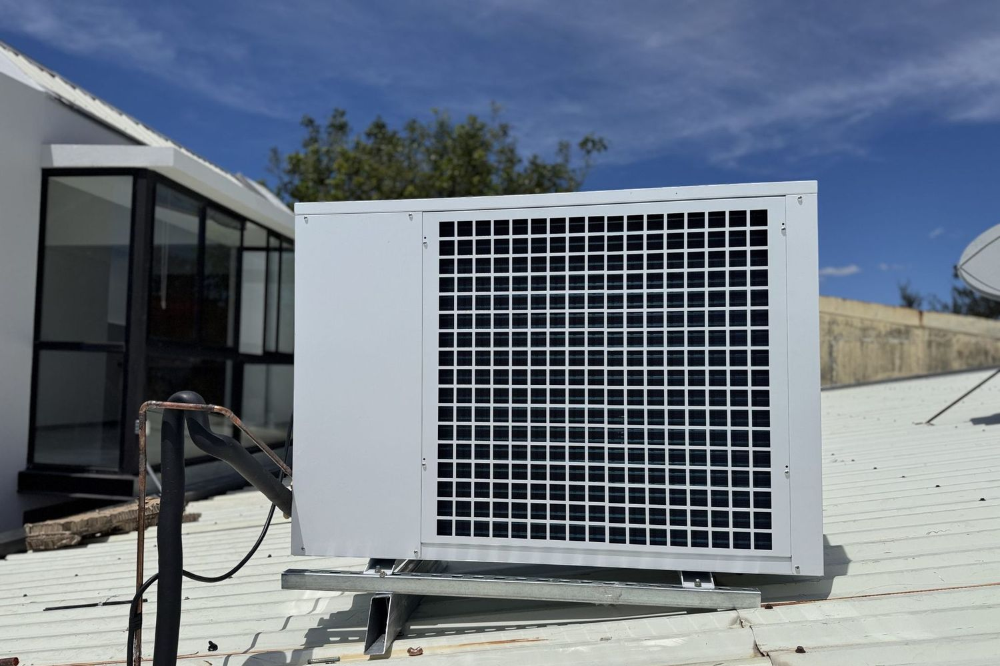

Pendik, Şeyhli · Kombi, klima ve petek temizliği
Kışın sıcak, yazın serin.
Kombi bakımı, kombi arızası ve petek temizliği. Evinizin ısınmasıyla ilgili bir sorun varsa arayın ya da yazın; yerinde bakıp ne olduğunu anlatalım.
Klima bakımı ve temizliği, arıza tespiti, montaj ve söküm-takma. Klimanızla ilgili ne gerekiyorsa arayın ya da yazın; yerinde bakıp ne olduğunu anlatalım.
Kışın çoğu ev için rahat aralık 20–22 °C civarıdır. Petekler eşit ısınmıyorsa sorun çoğu zaman termostatta değil tesisattadır.
Isıtma tarafında neler yapılır?
Soğutma tarafında neler yapılır?
Sayfanın üstündeki Isıtma / Soğutma anahtarı bu listeyi, renkleri ve önerileri değiştirir. Hangi cihazla uğraşıyorsanız o tarafı seçin.
Kombi bakımı
Brülör, eşanjör, fan ve baca bağlantısı, genleşme tankı ve emniyet elemanları kontrol edilir; gereken temizlik yapılır.
Kombi arızası
Basınç düşmesi, sıcak su gelmemesi, ses, ateşleme sorunu gibi durumlarda yerinde tespit ve onarım.
Petek temizliği
Dibinde tortu biriktiği için altı soğuk kalan, geç ısınan petekler için ısınma dengesini geri getirmeye yönelik temizlik.
Petek ve tesisat işleri
Sızdıran petek vanası, sürekli hava yapan hat, petek sökme-takma gibi işler için sorun, bilgi verelim.
Oda termostatı
Termostat ya da kablosuz kumanda kombiye komut vermiyorsa arayın; durumu birlikte bakalım.
Klima bakımı
Filtre, iç ünite bataryası ve tambur fan temizliği; drenaj hattı ve dış ünite kontrolü.
Klima arızası
Soğutmama, su damlatma, kötü koku, ses ve titreşim gibi sorunlarda yerinde tespit.
Klima montajı
İç ve dış ünitenin yerleşimi, boru ve drenaj hattı, vakumlama ve ilk çalıştırma.
Söküm ve takma
Taşınırken cihazın gazı dış üniteye toplanarak sökülmesi ve yeni adreste yeniden takılması.
Gaz basıncı kontrolü
Soğutma zayıfladıysa gaz basıncı ölçülür. Eksiklik bir kaçağa işaret eder; önce kaçağın bulunması gerekir.


Yerinde servis. Kombi, klima ve petek işleri adresinizde yapılır. Arızayı gördükten sonra, işe başlamadan önce ücret söylenir.
Evde ne oluyor?
Belirtiyi seçin; ilk kontrolleri ve ne zaman servis gerektiğini anlatan rehbere gidin.
Gaz kokusu alırsanız
Önce güvenlik. Bu durumda servis değil, 187 Doğalgaz Acil aranır.
- Ateş yakmayınKibrit, çakmak kullanmayın; sigara içmeyin.
- Elektrik düğmelerine dokunmayınLamba, priz, zil ve elektrikli cihazları açıp kapatmayın.
- Pencere ve kapıları açınOrtamı havalandırın.
- Gaz vanasını kapatınSayaç ya da cihaz önündeki doğal gaz vanasını kapalı konuma getirin.
- Binayı terk edin, 187'yi arayınAramayı dışarıdan, güvenli bir yerden yapın.
Doğal gaz iç tesisatında yeni hat, tadilat, cihaz yeri değişikliği ve gaz açma gibi işler yalnızca dağıtım şirketinin (İstanbul'da İGDAŞ) yetkilendirdiği firma ve kişilerce yapılabilir.
Kış öncesi kontrol listesi
Yaz öncesi kontrol listesi
Kombiyi ve petekleri kışa hazırlarken evde kendiniz bakabileceğiniz maddeler. İşaretledikçe kadran dolar; eksik kalanları tek dokunuşla bize iletebilirsiniz.
Klimayı yaza hazırlarken evde kendiniz bakabileceğiniz maddeler. İşaretledikçe kadran dolar; eksik kalanları tek dokunuşla bize iletebilirsiniz.
Henüz işaretlenen madde yok.
Aradığınızda ne olur?
Kombi çoğu zaman en soğuk günde, klima en sıcak günde sorun çıkarır. Telaşlı anlarda ne olacağını bilmek iyi gelir.
Sorunu anlatırsınız
Cihaz türü, belirti, varsa ekrandaki kod. Talep formu bunları sizin için tek mesajda toplar.
Zaman konuşulur
Ne zaman gelinebileceği bulunduğunuz yere ve o günkü yoğunluğa göre değişir; aradığınızda net bir zaman söylenir.
Yerinde tespit
Cihaz adresinizde incelenir; sorunun kaynağı size anlaşılır biçimde anlatılır.
Ücret işten önce konuşulur
Arıza görüldükten sonra, işe başlamadan önce fiyat söylenir; onayınızla devam edilir.
Ne zaman ulaşabilirsiniz?
Pazartesi–Cumartesi 24 saat açık, Pazar 13:00–20:00.
Pazartesiden cumartesiye 24 saat açığız; bu günlerde gece yarısı kombi durursa da arayabilirsiniz. Pazar günü 13:00 ile 20:00 arası ulaşabilirsiniz.
Şeyhli, Molla Gürani Cd. 10a, 34906 Pendik/İstanbul
Harita ve yol tarifiSık sorulanlar
Ne kadar sürede gelirsiniz?
Bulunduğunuz yere ve o anki yoğunluğa göre değişir. Aradığınızda o günkü duruma göre net bir zaman söylenir.
Ücret nasıl belirleniyor?
Arıza ya da yapılacak iş yerinde görüldükten sonra, işe başlamadan önce fiyat söylenir. Onaylamadığınız bir işe başlanmaz.
Gece ya da hafta sonu arayabilir miyim?
Pazartesiden cumartesiye 24 saat açığız. Pazar günü 13:00–20:00 arası ulaşabilirsiniz; bu saatlerin dışında WhatsApp'tan mesaj bırakabilirsiniz.
Hangi marka kombi ve klimalara bakıyorsunuz?
Cihazınızın marka ve modelini arayınca söyleyin ya da talep formuna yazın; bilgi verelim. Cihazın üzerindeki etiketin fotoğrafı işimizi kolaylaştırır.
Kombi bakımını ne zaman yaptırmalıyım?
En rahat dönem, ısıtma sezonu başlamadan önceki aylardır. Kullanma kılavuzunuzdaki bakım aralığına uyun; düzenli bakım hem güvenlik hem verim içindir.
Gaz kokusu alırsam sizi mi aramalıyım?
Hayır. Önce yukarıdaki adımları uygulayın ve binanın dışından 187 Doğalgaz Acil'i arayın. Gaz tesisatıyla ilgili işler yetkili firmalarca yapılır.
Taşınırken klimamı söküp yeni evde taktırabilir miyim?
Söküm ve takma için arayın. İki adresin bilgisini ve dış ünitenin yeni evde nereye konacağını söylerseniz planlama kolaylaşır. Montaj ön bilgi formu bunu sizin için toplar.
Kombi de klima da aynı numarada.
Pazartesi–Cumartesi 24 saat, pazar 13:00–20:00 arası ulaşabilirsiniz.